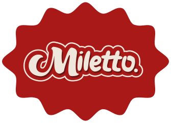
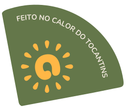
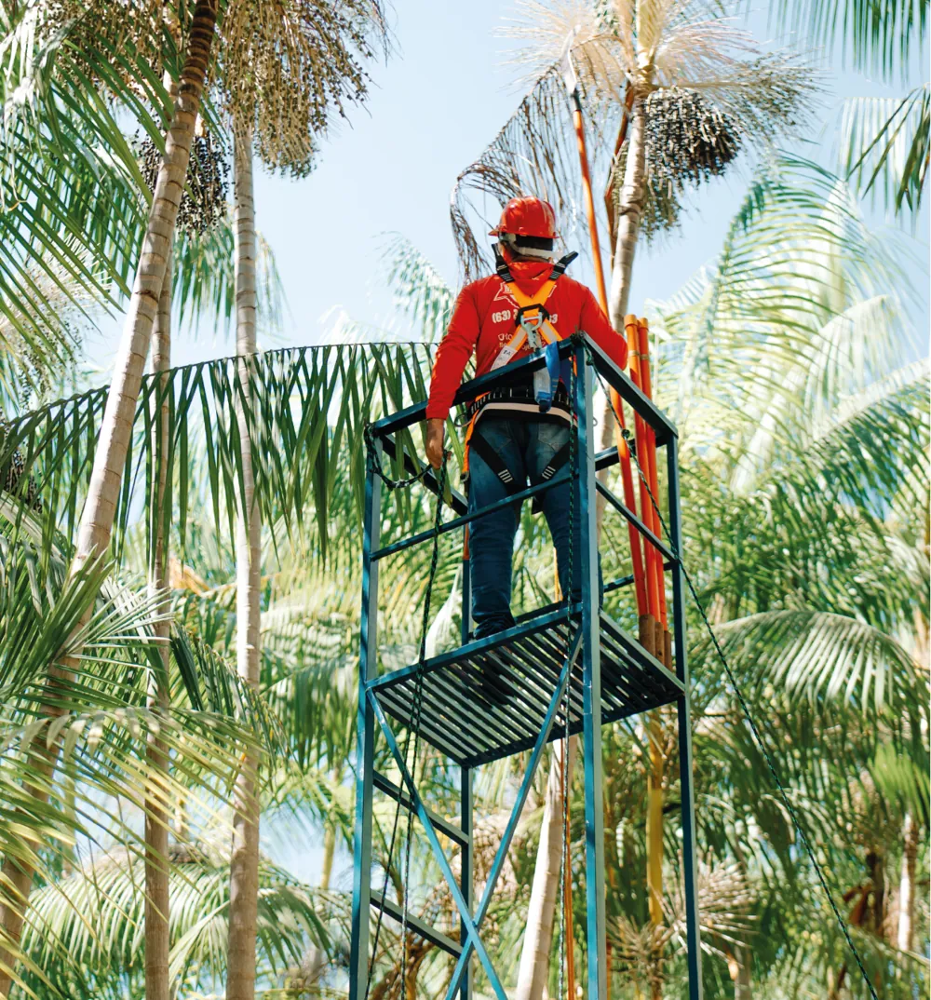
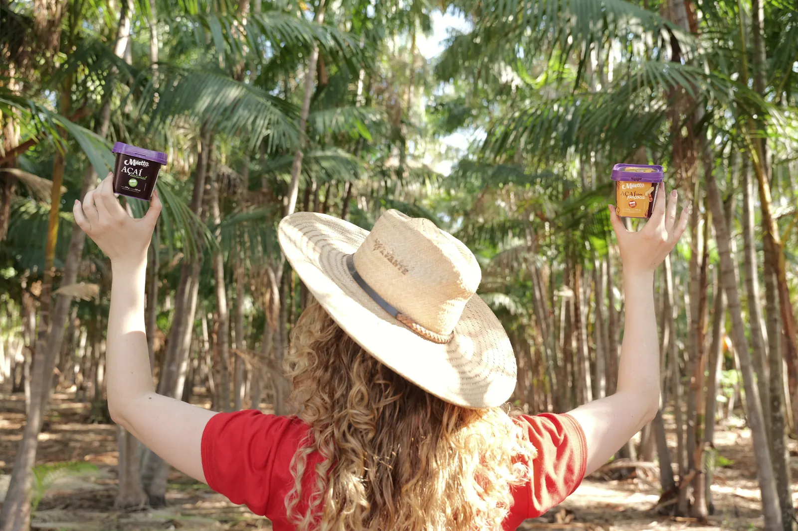
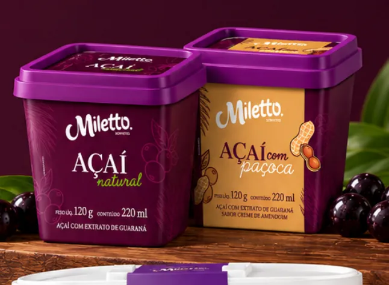
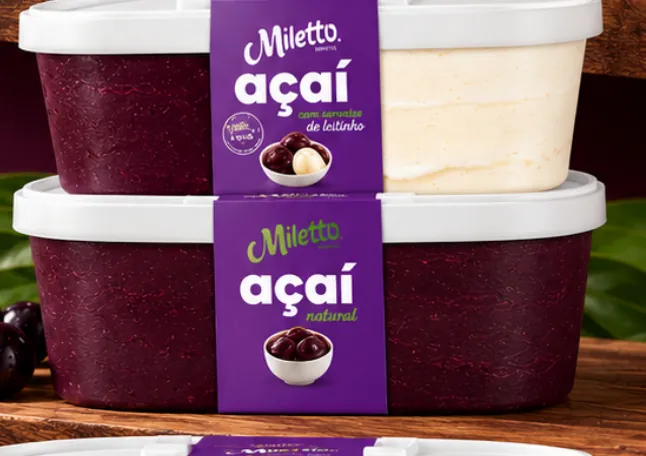
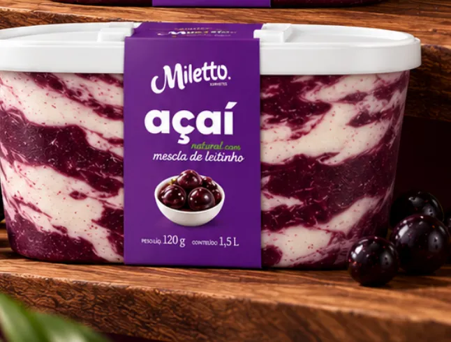
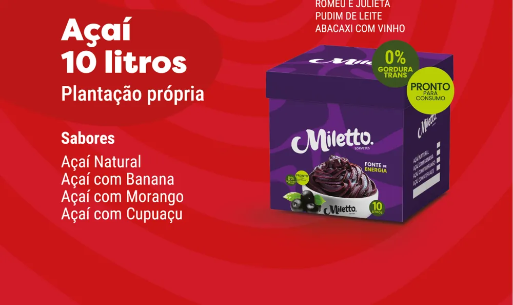

Origem que a gente conhece
O açaí vem do nosso próprio açaizal, aqui no Tocantins. Sabemos de onde veio cada cacho.


Na Miletto, o açaí não chega de longe nem passa de mão em mão. A gente colhe, seleciona, despolpa e embala — e é justamente por isso que a qualidade aparece já na primeira colherada.
Ter produção própria significa acompanhar cada etapa de perto. Nada de intermediários, nada de surpresa: só o açaí do jeito que a gente acredita que ele deve ser.
O açaí vem do nosso próprio açaizal, aqui no Tocantins. Sabemos de onde veio cada cacho.
Como a colheita é nossa, o fruto é tirado no ponto ideal de maturação — e não quando dá.
Seleção, lavagem, despolpa e embalagem feitas pela nossa equipe, com o mesmo padrão em cada lote.
Cor intensa, textura encorpada e aquele gosto de açaí de verdade, pote após pote.
Tudo começa no pé. Nossa equipe sobe nas palmeiras e colhe os cachos maduros, um a um, no nosso próprio açaizal no Tocantins.
Os frutos são separados dos cachos com cuidado, para chegarem inteiros e frescos à próxima etapa.
Só segue o que está no ponto: frutos escuros, firmes e bonitos. É aqui que a qualidade começa a ser garantida.
Os frutos passam por lavagem e higienização antes de qualquer processamento — segurança em primeiro lugar.
Na nossa fábrica, o fruto vira aquela polpa roxa, densa e cremosa que é a cara do açaí de verdade.
Embalado por nós e levado pela nossa própria distribuidora até os freezers Miletto espalhados pela cidade.
O sol forte, a terra e o jeito tocantinense de trabalhar estão em cada pote. Somos uma marca daqui, que cresceu com a cidade e faz questão de levar o nome do Tocantins junto com o nosso.
Valorizar o que é da nossa terra é também valorizar quem trabalha nela — da colheita no açaizal até a entrega no seu bairro.



Na medida certa pra uma pessoa: o açaí puro ou com a paçoca que todo brasileiro ama.

Açaí natural, ou açaí natural com sorvete de leitinho, pra dividir em casa.

Açaí natural com mescla de leitinho, cremoso do começo ao fim.

Para açaiterias e buffets: natural, com banana, com morango ou com cupuaçu.